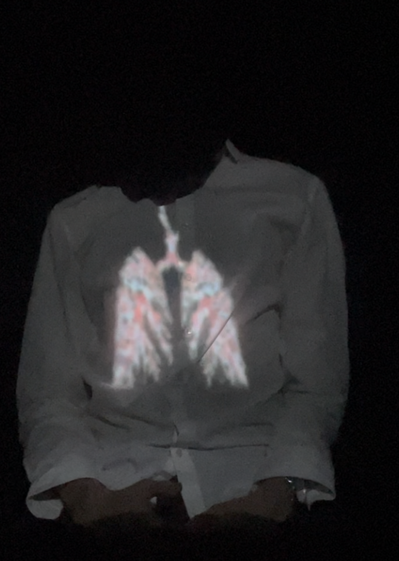
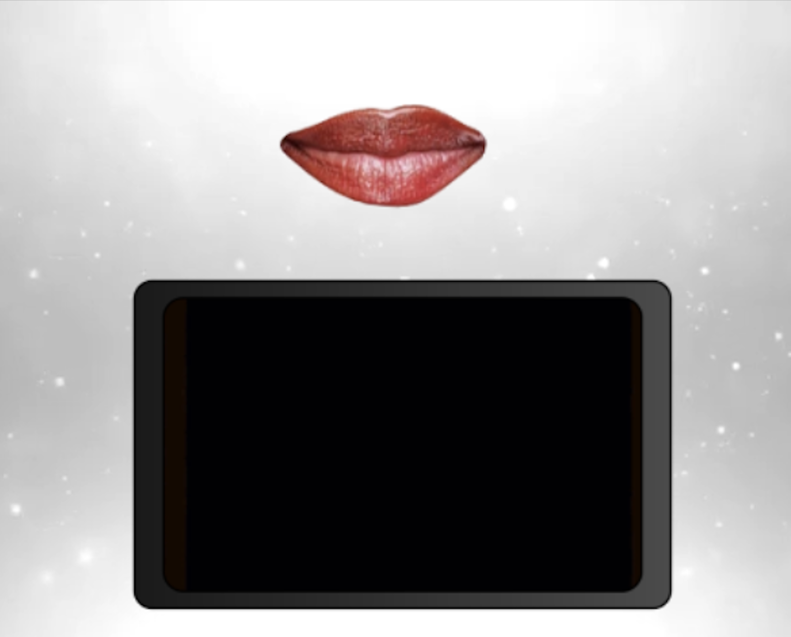
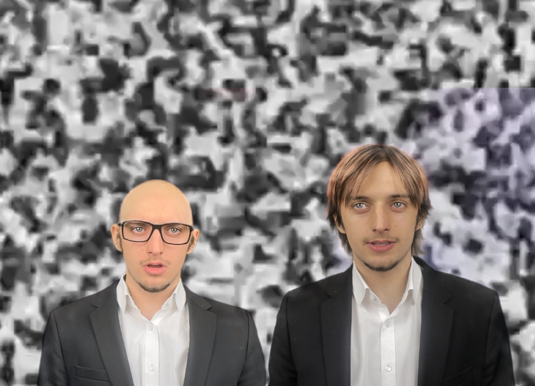
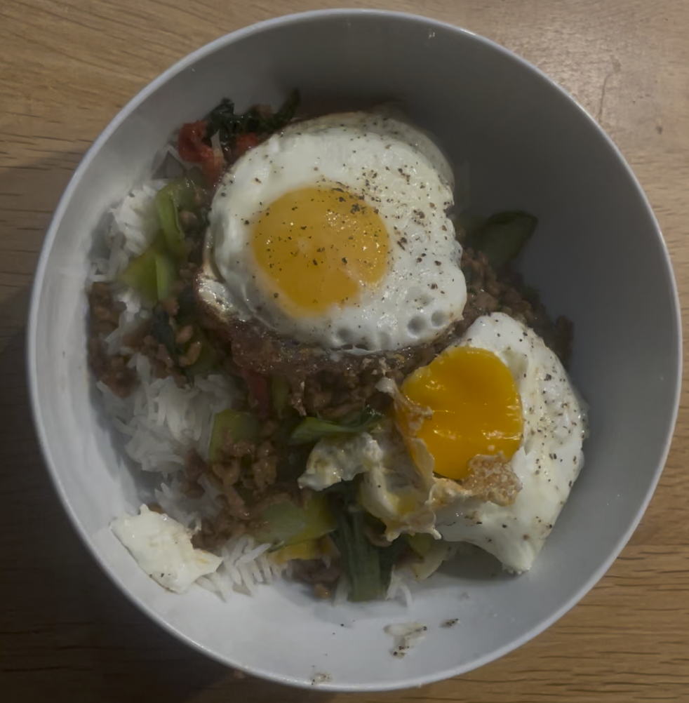
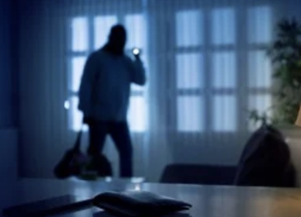
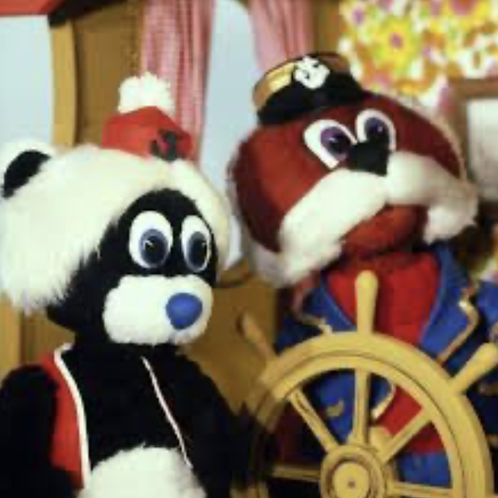
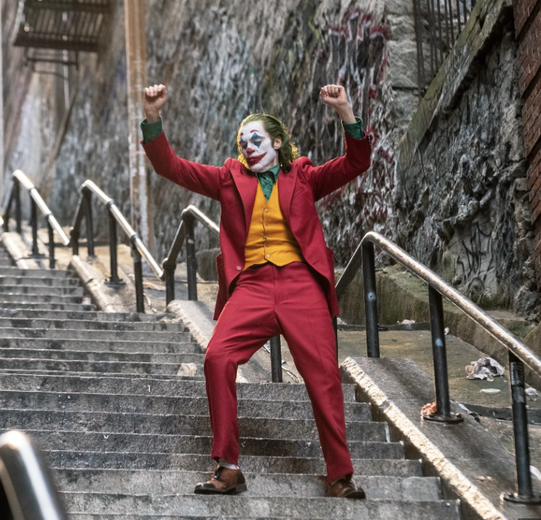

Selected Projects
A collection of my work from classes, personal projects, and experimental designs as I develop my skills

Product van je Omgeving
Created an abstract audio-visual installation combining projection, sound, and physical objects to convey a conceptual story without the use of text.
Visual
False Security
Created a audio-visual installation that uses projection and sound to pull the viewer into a different world, turning the piece into a kind of portal rather than just something to watch.
Visual
Framing Story
Created an audio-visual installation that presents the same subject from two contrasting perspectives, using projection, sound, and designed text to highlight how context changes the way events are perceived.
Visual
Thai Basil Chicken Tutorial
Created a tutorial video that demonstrates a newly developed skill, using different camera perspectives.
Visual
Robbery
Created an audio piece that tells a story using only sound, without music to guide the listener.
Audio
Bereboot (Uptempo remix)
Created a fully produced original track in the uptempo hardcore genre, focusing on high energy, aggressive sound design, and fast pacing to shape a clear and intense musical identity.
Audio
Joker Score
Created a custom audio score for a selected scene from Joker, focusing on building tension and matching the mood of the visuals through sound design.
Audio